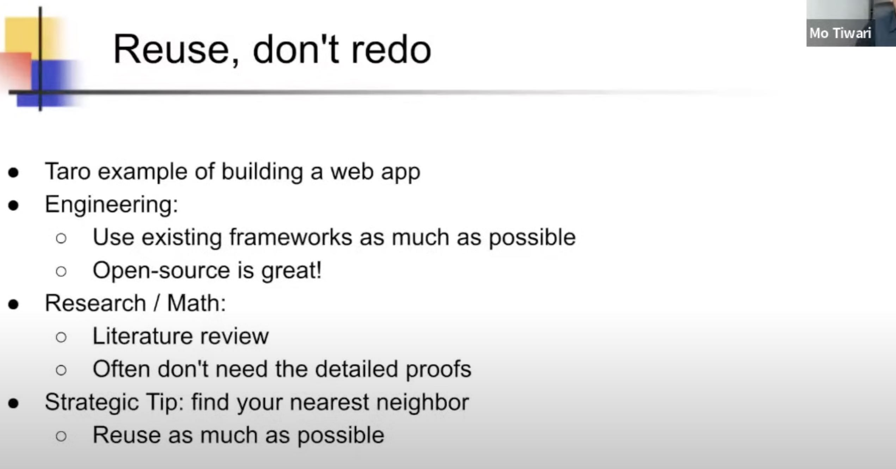
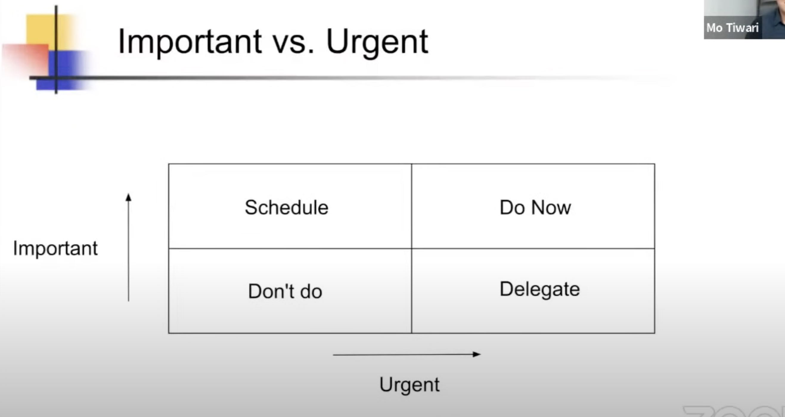
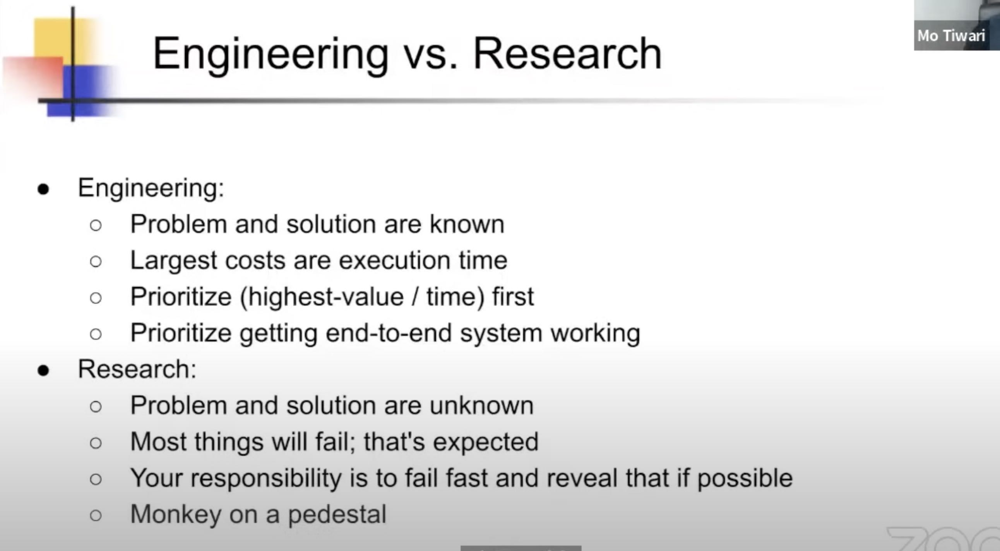
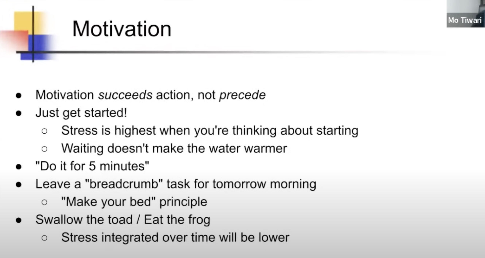
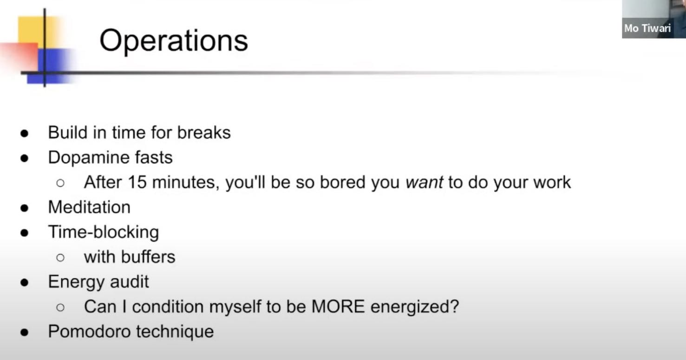
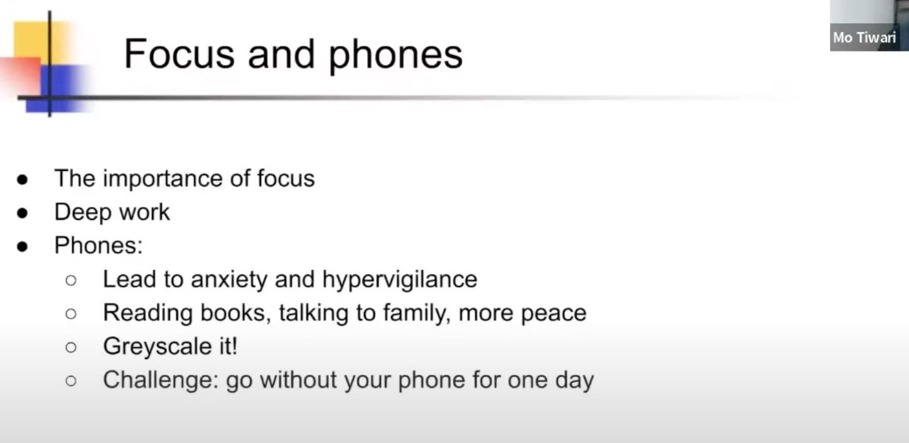

Efficiency Tips for Engineers (From An AI Researcher + Stanford PhD)
(8) Efficiency Tips for Engineers (From An AI Researcher + Stanford PhD) - YouTube
不仅是工程上，科研上也强调reuse. 定理可以直接拿来使用而不用考虑内部证明。

Ah, Delegate 完美！

他说到google framework里面有个“monkey on pedestal”。工程师通常是先出去创建pedestal, 然后发现monkey on pedestal不行。 而科研工作者需要尽早发现这个问题不行，避免去创建pedestal. 两种不同思维吧。

get started first 最重要，从小事开始入手减少阻力；留一些简单的工作到明天，先把难搞的任务想清楚。可能这种做法有一定心理学上的意义吧。

"Swallow the toad" 或 "Eat the frog" 是一种比喻或习语，主要用于描述人们在面对不愉快或讨厌的任务时，将其视为首要任务并尽快完成，以便能够继续进行其他更令人愉快或重要活动。
这个短语的起源并不十分明确，但通常可以理解为，先处理那些最困难或最不受欢迎的任务，然后转向进行其他事情，这样可以避免将最艰巨的任务留到最后，从而导致拖延或焦虑。
例如，如果你需要处理一堆繁琐的行政工作（这类工作往往被称为“toad”或“frog”，因为它们通常是人们最不想做的任务），你可以选择先将这些工作完成，而不是一直推迟，然后才能去做你更喜欢或更重要的事情。
深度休息（躺在床上什么事情都不做），这个时候多巴胺会要求做一些事情，那么这个时候起来就做task. 这样某种程度上会产生一定的动力。

手机应该是最吃注意力的，所以可以训练一天不要看手机，我觉得试试挺好的。
